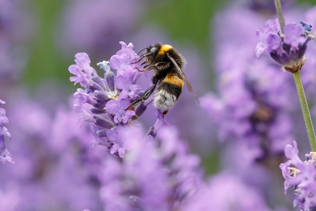

If you've got the time, we've got the honey!
Saving the bees means saving the planet! Want to help, but don't know where to start? No worries!
Here are flowers you can grow in your own windowsill or backyard to keep keep our small, fuzzy
friends able to keep our ecology and honey supply strong! No green thumb required!
Contact me: Kasey Leah